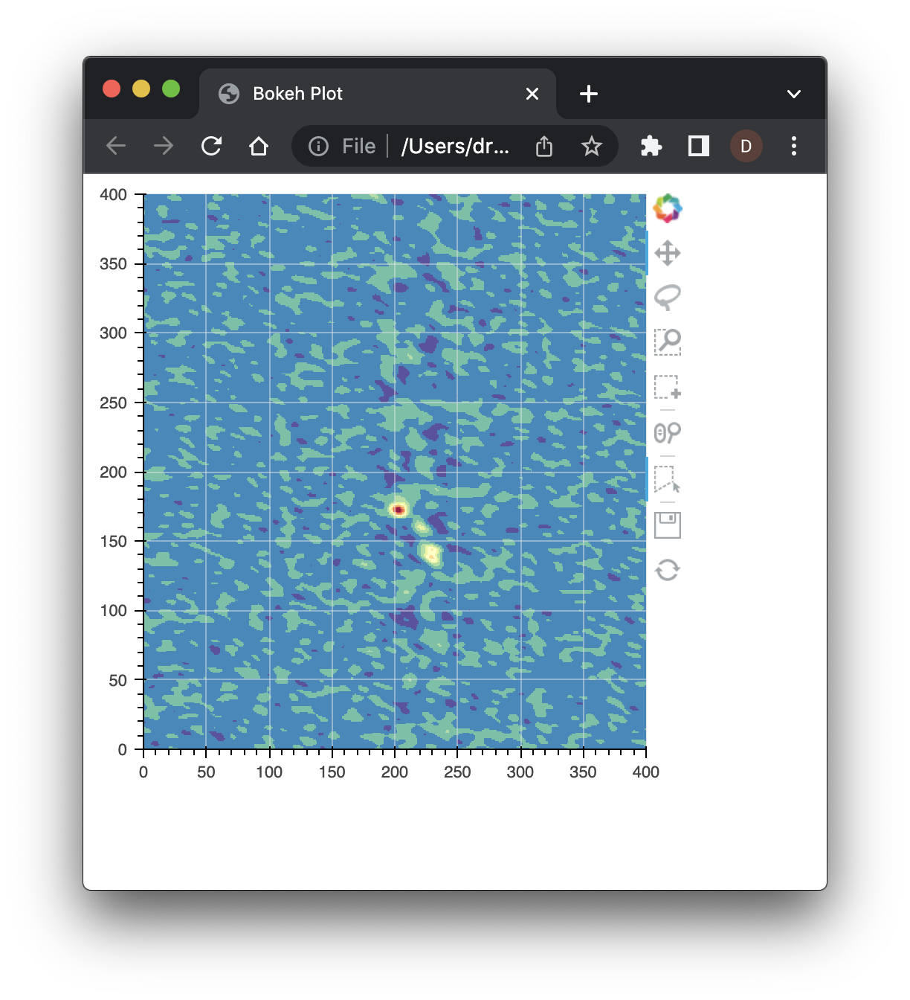
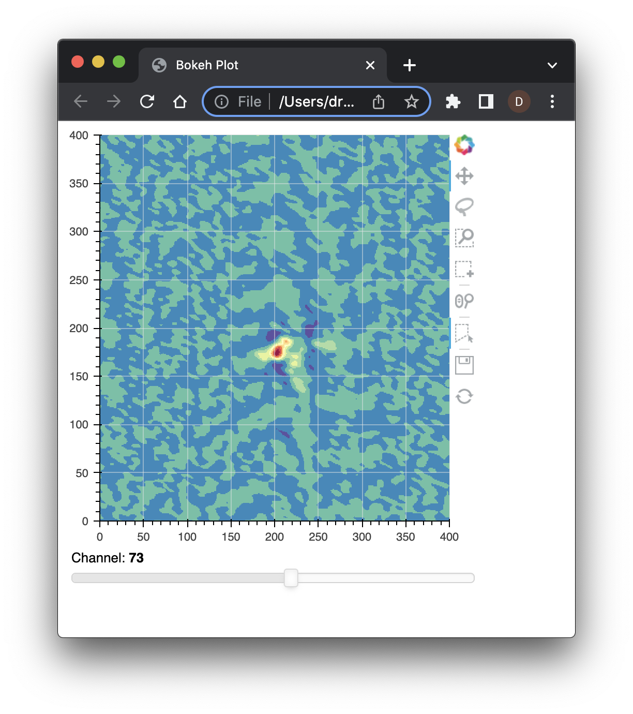
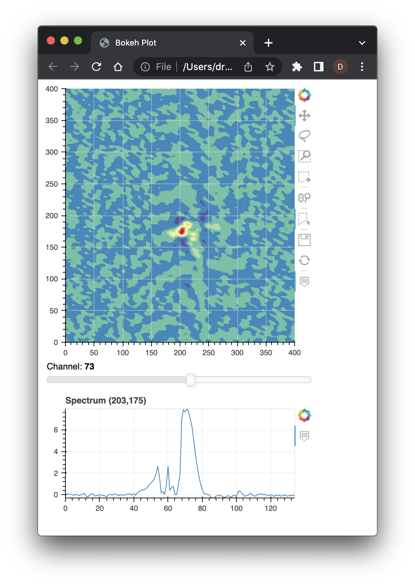
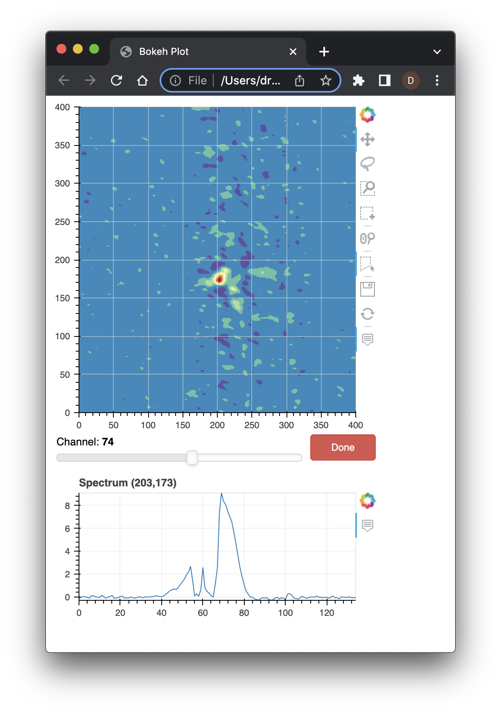
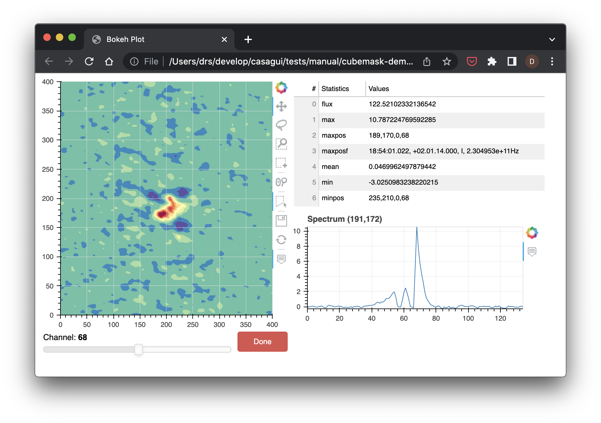

Cube Mask Design¶
Note
Historical reference. This page describes the design and
implementation of the casagui package, as it stood after the
visualization trade study. cubevis grew out of that work. The page
is kept for reference and is not maintained; names, figures and plans in
it may no longer match cubevis. See Historical reference.
The cube mask toolkit is a group of related components that can be used to construct different
GUIs related to image cube applications. Application builders do not need to adopt all of the
lements in this collection. A few of the widgets can be used or all can be used. The only
component that must be used is the image widget. This component is the central image cube
display window which includes the ability to step through the channels of the image cube, and
it is the users interaction with this component that drives the other component.
Image¶
An image cube can be displayed with this code:
import asyncio
from bokeh.plotting import show
from bokeh.layouts import row, column
from bokeh.models import Button, CustomJS
from cubevis.toolbox import CubeMask
cube = CubeMask( 'g35_sma_usb_12co.image' )
image = cube.image( )
cube.connect( )
show( image )
try:
loop = asyncio.get_event_loop( )
loop.run_until_complete(cube.loop( ))
loop.run_forever( )
except KeyboardInterrupt:
print('\nInterrupt received, stopping GUI...')
print( f"cube exited with {cube.result( )}" )
The image function creates a two-dimensional plot that displays one channel from the
image cube which was passed in as a constructor parameter. Even without any controls the
image display can be used to create regions and move through the channels of the cube
(Option-Ctrl-Up on MacOS and Alt-Ctrl-Up on Linux moves to the next channel).


The image update is managed via the asyncio event loop. The tools along the edge
can be used to draw regions, scroll, pan, zoom, etc. The regions are accessable after
successful completion of GUI interactions. The image used in these examples is
available for download.
Channel Scrolling
====================
The CubeMask object provides access to other GUI components that are integrated with
the image display. Scrolling with a slider that makes traversing the channels much easier,
and it can be added, assuming the same imports as above, like:
cube = CubeMask( 'g35_sma_usb_12co.image' )
layout = column( cube.image( ),
cube.slider( ) )
cube.connect( )
show( layout )
try:
loop = asyncio.get_event_loop( )
loop.run_until_complete(cube.loop( ))
loop.run_forever( )
except KeyboardInterrupt:
print('\nInterrupt received, stopping GUI...')
print( f"cube exited with {cube.result( )}" )


The component usage is indicated by calling the accessor functions, e.g. image or
slider here, and the call to the connect member function connects the behind
the scenes connections to make all of the elements (that are in use) interact and
update in response to user input.
Spectra (Z-Axis) Display¶
Another useful component included in CubeMask is the spectra display. This display
shows the image spectra along the z-axis of the image cube. As with slider above
the spectra display is accessed with the spectra member function:
cube = CubeMask( 'g35_sma_usb_12co.image' )
layout = column( cube.image( ),
cube.slider( ),
cube.spectra( width=400 ) )
cube.connect( )
show( layout )
try:
loop = asyncio.get_event_loop( )
loop.run_until_complete(cube.loop( ))
loop.run_forever( )
except KeyboardInterrupt:
print('\nInterrupt received, stopping GUI...')
print( f"cube exited with {cube.result( )}" )


By default, the spectra display is wider, but these components generally support the
same parameters supported by the underlying Bokeh components. In this case, the width
is specified.
Integration with Bokeh¶
While we have already seen some integration with Bokeh models, e.g. layout above,
It is also possible to include reactive models. The js_obj member function provides
access to control elements of the CubeMask components. This example shows how this
interface can be used to close the GUI, exit the event loop and return control to
Python:
cube = CubeMask( 'g35_sma_usb_12co.image' )
done = Button( label="Done", width=80, button_type="danger" )
layout = column( cube.image( ),
row( cube.slider( ), done ),
cube.spectra( width=400 ) )
done.js_on_click( CustomJS( args=dict( obj=cube.js_obj( ) ),
code="obj.done( )" ) )
cube.connect( )
show( layout )
try:
loop = asyncio.get_event_loop( )
loop.run_until_complete(cube.loop( ))
loop.run_forever( )
except KeyboardInterrupt:
print('\nInterrupt received, stopping GUI...')
print( f"cube exited with {cube.result( )}" )


This example adds a button to invoke the completion function of the
CubeMask JavaScript control object which is returned by the
js_obj function. The code in this example is JavaScript
rather than Python code, and the execution takes place in the
browser displaying our GUI.
Channel Statistics¶
The channel statistics widget provides statistics information about
the current channel displayed and it updates along with the channel
displayed in the image widget. It is incorporated into the
display just like all of the other elements:
cube = CubeMask( 'g35_sma_usb_12co.image' )
done = Button( label="Done", width=80, button_type="danger" )
layout = row( column( cube.image( ),
row( cube.slider( ), done ) ),
column( cube.statistics( ),
cube.spectra( width=400 ) ) )
done.js_on_click( CustomJS( args=dict( obj=cube.js_obj( ) ),
code="obj.done( )" ) )
cube.connect( )
show( layout )
try:
loop = asyncio.get_event_loop( )
loop.run_until_complete(cube.loop( ))
loop.run_forever( )
except KeyboardInterrupt:
print('\nInterrupt received, stopping GUI...')
print( f"cube exited with {cube.result( )}" )


Here the elements have been rearranged to so how easy it is to organize the display.
Implementation¶
The CubeMask implementation uses the Bokeh figure
to implement the image and spectra display. It also uses Slider and
DataTable.
These are updated from Python using websockets to request (from GUI) and receive (from Python) the data updates
for the GUI elements.
Two websockets are used by CubeMask. One websocket is devoted to updating the image and statistics, which
are both updated with the same message. The other websocket is used for control. Currently, just signaling
that the GUI should shutdown, but later it may be used for other control messages.
Conclusion¶
In addition to the elements shown above there is a help text box which
can be used to provide a description of how to interact with the CubeMask
interfaces. This text box can be added to the GUI and shown and hidden as
desired.
The goal of the design of CubeMask is to incorporate added functionality
that is specific to our use case without interfering with the the integration
of these elements into Bokeh displays. This means that the Bokeh elements must
be exposed while also adding our extensions behind the scenes.